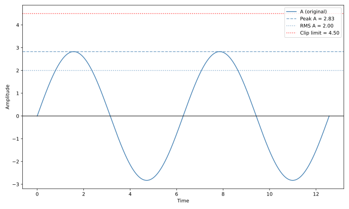
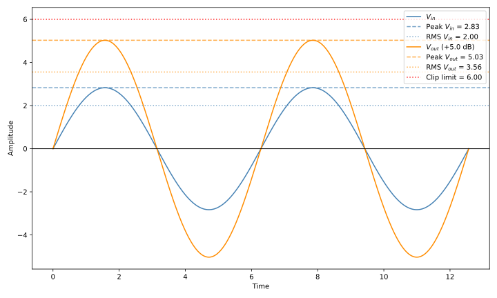

Understanding decibels
Table of Contents
1. Introduction
The decibel is a unit that is mostly used for audio and signals, but it is often misunderstood. This article will attempt to explain precisely what it measures, the different unit types and how they can be calculated, along with a simple example.
First, it is important to understand that it is a relative unit of measurement, meaning that it always expresses the relationship between two quantities. Specifically, it measures the ratio of two power values on a logarithmic scale. It is designed for power quantities (e.g. watts) and root-power quantities (e.g. voltage, current, sound pressure)1.
The decibel is an ideal unit for expressing gain or amplification in a circuit, since it is able to accurately express the relationship between the input signal of the amplifier and the resulting output signal.
Although it is often used to express absolute “audio volume” or “signal level”, it always expresses a ratio. When it is used as an absolute value, it usually expresses the ratio between some variable and a constant/reference value. Some of these constants or “reference values” are standard, and have their own suffixed unit; the most common are listed below for reference.
- dBW: Measures the relationship between some power in watts and 1 watt.
- dBm: Measures the relationship between some power in watts and 1 milliwatt.
- dBV: Measures the relationship between a RMS voltage and 1 volt.
- dBu: Measures the relationship between a RMS voltage and \(\sqrt{0.6}\) volts2.
- dBFS: Measures the relationship between the amplitude of a signal and the maximum the device can handle before clipping occurs. The “FS” stands for Full Scale.
- dBSPL: Measures the relationship between a sound pressure and 20 micropascals (μPa). SPL stands for Sound Pressure Level.
Some of these units will be mentioned below, specially those related to voltage and signal amplitude.
2. Calculating decibels
Depending on whether the quantities that are used are directly-proportional to power or if they need to be squared, a different formula is used.
2.1. Calculating decibels for power quantities
Given two power quantities \(a\) and \(b\), the decibels can be calculated from their ratio using the following formula.
\begin{equation} \label{eq:power-ratio-to-decibels} \mathrm{dB} = 10 \log_{10} \left( \frac{a}{b} \right) \\ \end{equation}Therefore, given the decibels, the ratio between the two values can also be obtained using a similar formula.
\begin{equation} \label{eq:decibels-to-power-ratio} \frac{a}{b} = 10^{\frac{\mathrm{dB}}{10}} \end{equation}2.2. Calculating decibels for root-power quantities
However, if those values are root-power quantities, a factor of 20 must be used.
\begin{equation} \label{eq:root-power-ratio-to-decibels} \mathrm{dB} = 20 \log_{10} \left( \frac{a}{b} \right) \\ \end{equation}Again, given the decibels, the ratio can also be obtained using 20 as the factor.
\begin{equation} \label{eq:decibels-to-root-power-ratio} \frac{a}{b} = 10^{\frac{\mathrm{dB}}{20}} \end{equation}2.3. Understanding the difference
To understand why 20 must be used for certain units, we can inspect the equivalence between the two formulas for watts (power quantity) and volts (root-power quantity). First, it’s important to understand that power is proportional to the squared voltage, assuming the load is constant.
\begin{align*} P = V \times I = V \times \frac{V}{R} = \frac{V^2}{R} \end{align*}This equivalence can be replaced in the formula of decibels for power quantities (again, assuming both power quantities are under the same load), resulting in the previous formula for root-power quantities.
\begin{align*} \mathrm{dB} &= 10 \log_{10} \left( \frac{P_2}{P_1} \right) \\ &= 10 \log_{10} \left( \frac{V_2^2/R}{V_1^2/R} \right) \\ &= 10 \log_{10} \left( \left( \frac{V_2}{V_1} \right)^2 \right) \\ &= 10 \cdot 2 \log_{10} \left( \frac{V_2}{V_1} \right) \\ &= 20 \log_{10} \left( \frac{V_2}{V_1} \right) \end{align*}3. Example
To illustrate this, a simple amplifier circuit will be used. An input signal of \(V_{\mathrm{in}}\) volts RMS is amplified using a specific gain of \(G\) decibels into an output signal of \(V_{\mathrm{out}}\) volts3. For this example, it will be assumed that the input voltage is 2 volts RMS, the gain of the amplifier is 5 decibels, and the maximum input voltage supported by the device is 4.5 volts RMS.
Note how the gain is expressed in decibels, not in a suffixed unit like “dBV” or “dBFS”. This is because there is no need for a constant or “reference value”, the value of the amplifier simply indicates the ratio that it is supposed to create between the input and the output voltage after the signal is amplified.
The following figure plots an example input signal, a sinusoidal wave of 2 volts RMS. The peak and the RMS values of the wave are highlighted, along with the clip limit of 4.5 volts.

As a reminder, the RMS of alternating current equals the value of direct current that would dissipate the same power in a resistive load. With this in mind, the peak value of the sinusoidal wave can be easily calculated from the RMS value.
\begin{align*} V_{\mathrm{peak}} &= V_{\mathrm{RMS}} \times \sqrt{2} \\ &= 2 \times \sqrt{2} \\ &\approx 2.8284 \end{align*}3.1. Calculating the input decibels
One common misunderstanding about decibels stems from the fact that the input signal is usually not measured in volts, but in “absolute” decibels using a constant reference value; in other words, the input is often expressed in dBV or dBu. Note, however, that the amplification is expressed in dB, since it measures two variables (input and output signals).
Here are the formulas for converting from voltage to different “suffixed decibel” units.
| Suffix | Formula | Example |
|---|---|---|
| dBV | \[20 \log_{10} \left( \frac{V_{\mathrm{in}}}{1} \right)\] | \[20 \log_{10} \left( \frac{2}{1} \right) = 20 \log_{10}(2) \approx 6.02\] |
| dBu | \[20 \log_{10} \left( \frac{V_{\mathrm{in}}}{\sqrt{0.6}} \right)\] | \[20 \log_{10} \left( \frac{2}{0.774} \right) \approx 20 \log_{10}(2.581) \approx 8.23\] |
| dBFS | \[20 \log_{10} \left( \frac{V_{\mathrm{in}}}{V_{\mathrm{max}}} \right)\] | \[20 \log_{10} \left( \frac{2}{4.5} \right) \approx 20 \log_{10}(0.444) \approx -7.04\] |
All of these values express the same quantity, an input voltage of 2 volts RMS, but with different units. The key detail is that the input value can’t be expressed in decibels without another reference value, which is usually constant and varies depending on the unit. Also notice how a factor of 20 is used in the formulas, since we are dealing with a root-power quantity, volts, and not a power quantity like watts.
3.2. Calculating the output voltage
Since the input voltage and the gain of the amplifier are known, the output voltage can be obtained with the formula from the previous section. First, the ratio between the input and output voltages is calculated by replacing the amplifier gain, 5 dB.
\begin{align*} \frac{V_{\mathrm{out}}}{V_{\mathrm{in}}} &= 10^{\frac{\mathrm{dB}}{20}} \\ &= 10^{\frac{5}{20}} \\ &= 10^{0.25} \\ &\approx 1.778 \end{align*}Then, the input voltage of 2 volts RMS is replaced to obtain the output voltage.
\begin{align*} V_{\mathrm{out}} &\approx 1.778 \times 2 \\ &\approx 3.556 \end{align*}Notice how the output voltage grows logarithmically, not linearly; if the input of 2 volts RMS was directly multiplied by the gain of 5 dB, the output would become 10 volts RMS.
The following figure plots the resulting sinusoidal wave after being amplified by a gain of 5 dB. Again, its peak and RMS values are highlighted.

From the plot, we can also observe that the RMS value of the output is below the clip limiter, while the peaks are above it and would not be processed by the device.
3.3. Calculating the output dBV
Similarly to how the input voltage was converted to dBV, the same can be done to the output voltage.
\begin{split} \mathrm{dBV} &= 20 \log_{10} \left( \frac{V_{\mathrm{out}}}{1} \right) \\ &\approx 20 \log_{10} \left( \frac{3.556}{1} \right) \\ &\approx 20 \log_{10}(3.556) \\ &\approx 20 \times 0.551 \\ &\approx 11.02 \end{split}Just like with any other value expressed in decibels, this 11.02 expresses a ratio between two values, in this case the output voltage and a constant reference value of 1 volt. This new value, although expressed in decibels, is completely independent from the input or the amplification, it simply indicates a ratio between a signal level and a constant.
Also note that, by subtracting the input and output dBV, the gain can be obtained. This can be done with a simple subtraction because the input and output dBV values were calculated using the same logarithmic scale, which is also used to express the gain of the amplifier. In other words, a value expressed in “suffixed” decibels can be added to another value in “plain” decibels to obtain a result back in “suffixed” decibels because all decibels use the same logarithmic formula \eqref{eq:power-ratio-to-decibels}.
Footnotes:
A power quantity is directly proporcional to power, while a root-power quantity is a quantity whose square is proportional to power. For example, if an amplifier triples its input voltage, it would be multiplying the total power by 9.
Specifically, it is the RMS voltage that would dissipate 0 dBm (1
mW) in a 600 Ω load. This unit was originally called dBv, but was changed
to dBu to avoid confusion with dBV.
This assumes that the input and output impedance (\(R_{\mathrm{in}}\) and \(R_{\mathrm{out}}\)) are equal, which is not always the case.